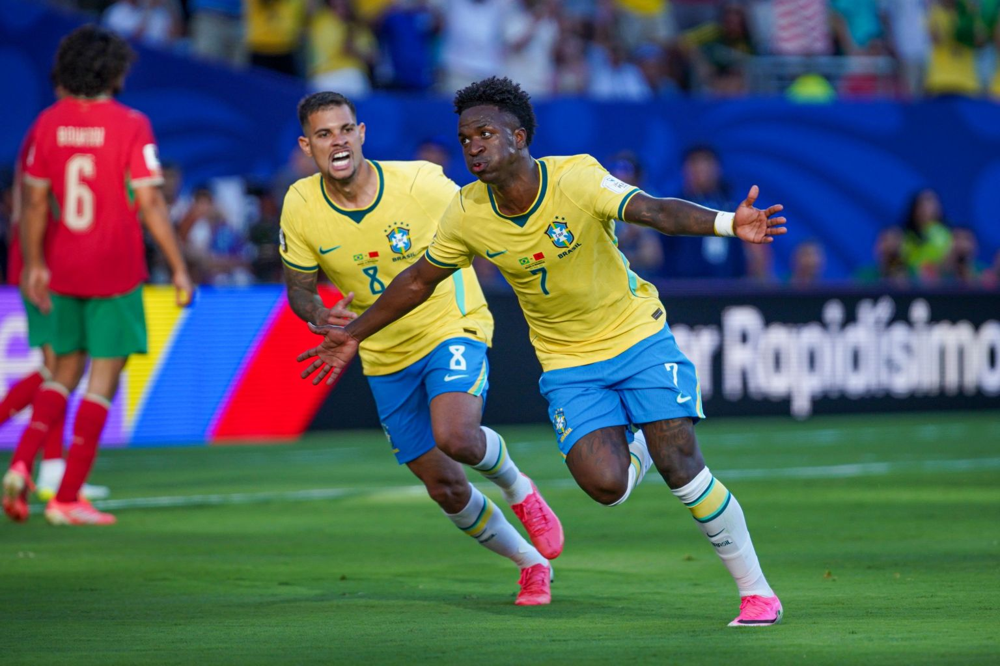

Brasil empata na estreia da Copa do Mundo e deixa dúvidas para a sequência

Foto: Nelson Terme/ CBF
Brasil empata na estreia da Copa do Mundo e deixa dúvidas para a sequência
No início da semana, a delegação da seleção brasileira chegou aos Estados Unidos para o amistoso contra o Egito. A equipe venceu por 2 a 1, com gols de Bruno Guimarães e Endrick, que voltou a marcar pela Seleção após dois anos. Encerrada a preparação, chegou o momento do maior desafio: a Copa do Mundo.
Na estreia, diante de Marrocos, o Brasil apostou em um jogo rápido para escapar da pressão adversária. No entanto, o plano não funcionou como esperado. A seleção marroquina abriu o placar após um erro de passe de Lucas Paquetá. Brahim conduziu a jogada e encontrou Saibari, que finalizou por cobertura na saída do goleiro Alisson.
Após sofrer o gol, o Brasil reagiu, principalmente, com Vinicius Júnior. O camisa 7 criou duas grandes oportunidades: em uma, Igor Thiago desperdiçou a chance; na segunda, Vini resolveu sozinho, acertando um chute indefensável para empatar a partida. Assim, o primeiro tempo terminou em 1 a 1.
Na etapa final, o confronto ficou mais equilibrado e complicado para a seleção brasileira. O Brasil até criou algumas oportunidades, mas não conseguiu aproveitá-las. Marrocos pouco ameaçou o gol de Alisson, mas controlou grande parte das ações da partida. O destaque da equipe africana foi o jovem volante Ayyoub Bouaddi, de apenas 18 anos, que dominou o meio-campo e, para muitos, foi o melhor jogador em campo.
O empate deixou muitas dúvidas para a sequência da competição. A equipe titular foi escalada pensando em pressionar o adversário no ataque e reforçar a marcação no meio-campo para conter a criatividade marroquina. Porém, os erros individuais acabaram tendo um peso maior no resultado.
Entre os destaques brasileiros, Vinicius Júnior foi novamente decisivo, marcando um belo gol e demonstrando mais uma vez sua importância em grandes competições. Douglas Santos também fez uma partida segura e reforçou sua condição de titular. Fabinho e Danilo entraram bem, enquanto Alisson realizou uma importante defesa que evitou a derrota da Seleção.
Agora, o próximo desafio será contra o Haiti, na sexta-feira (19), às 21h30. A expectativa é de uma atuação mais convincente para buscar a primeira vitória brasileira nesta Copa do Mundo.
Feito por: @g.abbsp